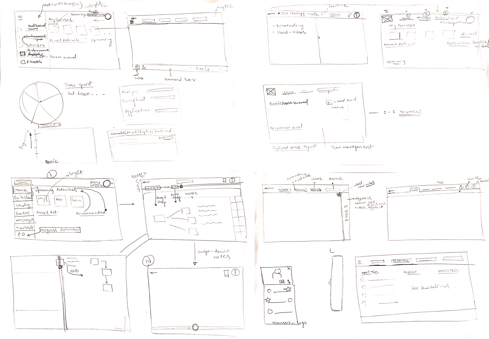
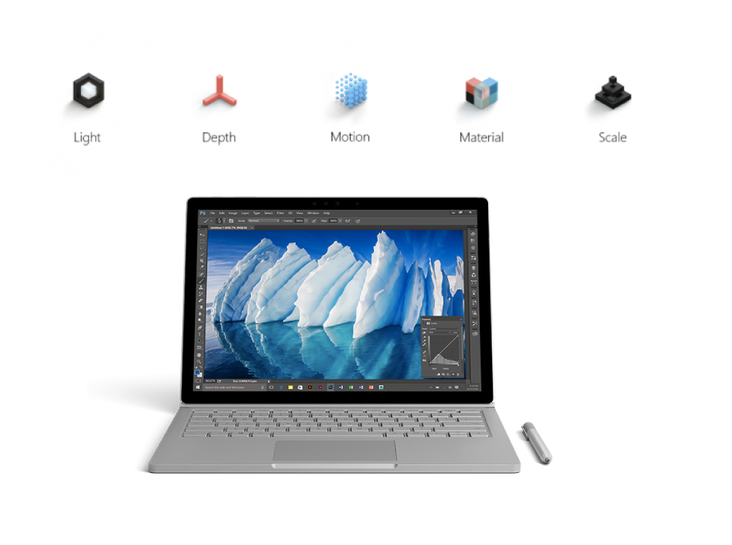
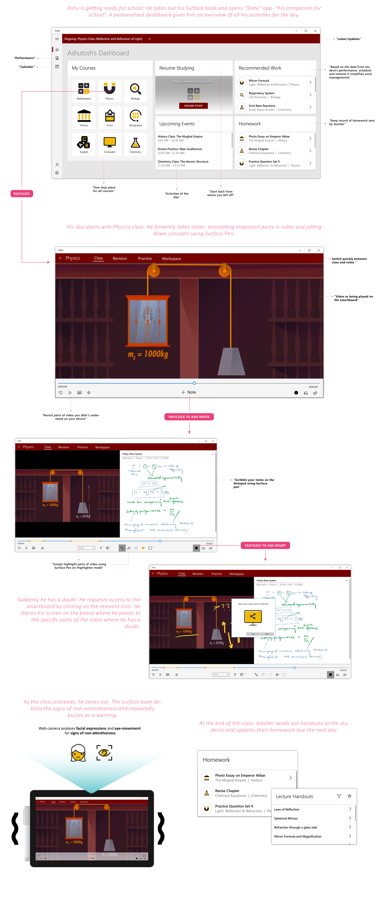
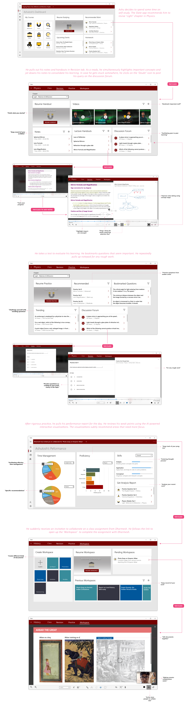
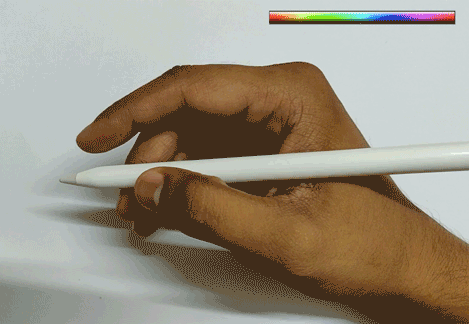

Design
“Iterating through Wireframes”
Using the context scenarios as a reference, I quickly sketched wireframes to iterate through numerous designs.

Sample Wireframes
“Visual Design Guidelines”
Using Fluent Design Language as my reference, I designed the high-fidelity mock-ups for Microsoft Surfacebook coupled with Surface Pen.

Using Fluent Design Language
Introducing 'Slate'
"the perfect companion for school"
Scenario 1: Supporting learning in classroom
Scenario 2: Supporting learning at home
Shortcut Interactions with Surface Pen

Double-tap with index finger to quickly switch between pen-types

Scroll with index finger to change color of the pen